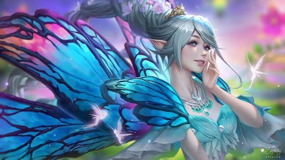
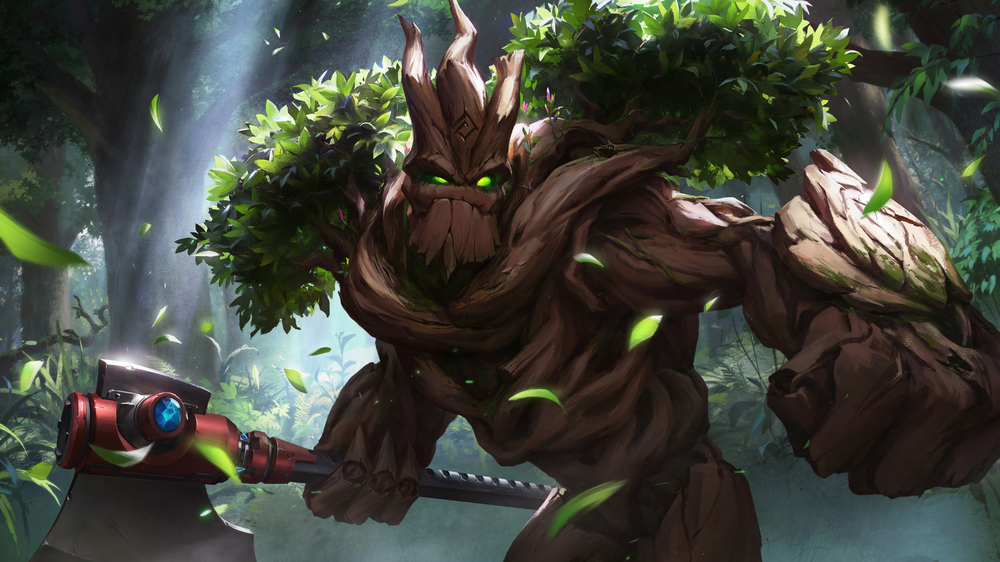

Artificiel
Environnement : Varié
Durée de vie moyenne : 300 ans
Taille : P-M-G
Système politique : Aucun concret, se mêlant aux masses qui font leur origines
Statut politique : -
Relations hostiles : Variable
Alliés : Variable
Croyance : Variable
Statistiques :
Force (variable entre:)


Résistance (variable entre:)
Dextérité (variable entre:)
Magie
Ingénierie (variable entre:)

Capacités innées : Fées: capacité à voler
Élémentaires/nymphes: résistance et force accrues
Homonculus: variable
Facilités magiques : Magie en rapport avec les plantes
Magie de l'élément affilié
Capacités psychiques
Impossibilités : Magie noire
L'élément opposé
Lumière et magie pure
Histoire :
Les artificiels sont créés, ils ne naissent pas. Certains sont programmés par leur créateur pour suivre des règles simples tandis que d'autres sont pourvus de sentiments et capables de penser librement. Ce sont ces derniers qui sont présentés ci-dessous.
Peuple :
Profil type : Enjouée - Fluette - Insouciante
Difficultés à comprendre les émotions
Dénué d'émotions - Vide - Las
Alimentation : Variable
Monture : Aucune
Fée
Les fées sont de petites créatures, créées via des fleurs pollinisée par phéromones de sexes opposés, qui vivent dans les forêts de l’Ozaive, forêts auxquelles elles doivent l’existence et la vigueur. Parfois fourbe, d’autres fois bienveillant, ce peuple aux ailes d'insectes s’allie parfaitement aux elfes lunaires et à la lueur de la faune qui régit leur habitat. Leur moyen de prospérité étant peu commun les fait entrer dans la case des artificiels, la reproduction usuelle des autres peuples n'étant pour eux que source de luxure.

Homonculus
Les homonculus naissent d’un mage ou d’expériences contre l’éthique. Ce sont des êtres artificiels ayant une forme humanoïde, originellement modulés pour servir leur maitre et capables de ressentir ou non des émotions. Ils proviennent principalement dans la Tour Zatvor, pour servir Ga’ar, ou en Ozaive.

Élémentaire / Nymphe
Les nymphes et élémentaires sont faits d’une forte concentration en énergie magique. Dans la majorité des cas, si l’un d’eux ressent des émotions et est doué de conscience, alors il a probablement été créé par un archimage. Leurs lieux de naissance sont bien souvent les Terres-d’Origine.

Il est aussi possible de trouver des nymphes, des élémentaires et des fées à l'Accalmie, là où le mystique et la réalité ne font qu'un, une demeure parfaite pour ces types d'artificiels.
Nombre d'OC de cette race sur Yndrill: -